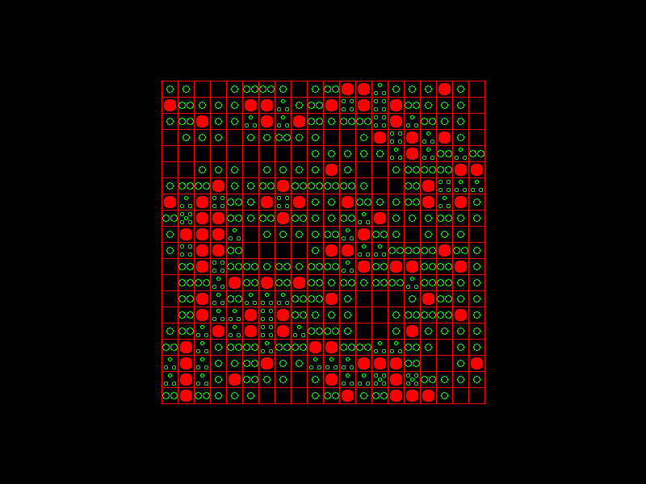
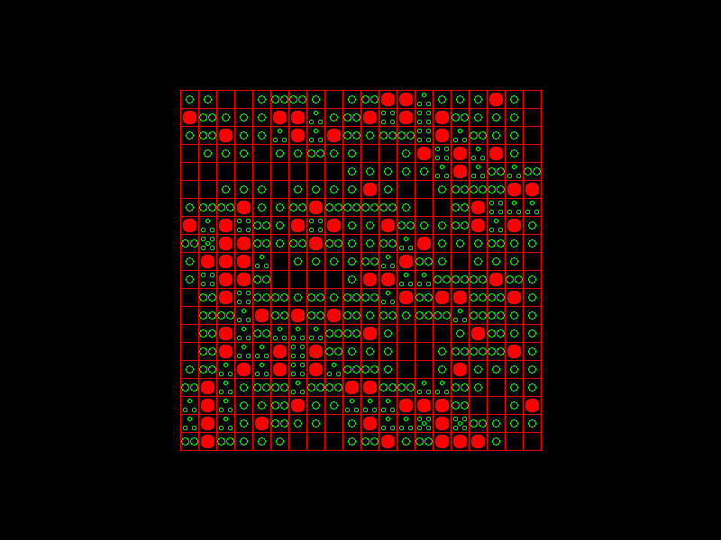

Blog of Ben Duffy
Graphics, Visualisation and Game Programming
- LibGDX
- Phaser.js
- DirectX
- OpenGL
- GLFW
- OpenGL ES
- WebGL
Artificial Intelligence
- Machine Learning
- Game playing AI
- Neural Networks
- Ontologies.
Web Development
- jQuery
- Bootstrap
- Google Maps API
- D3.js
- Leaflet JS
- OpenGL ES
- WebGL
All pictures in one place.
What I did In:
December 2015
Created this website.
Found out that Github hosted free static webpages and decided to create one so I could have a place to put up all the things I have worked on.
It also encourages me to get more done because other people can now see what I'm doing and it's a great place for me to practice my HTML, CSS and JavaScript.
I can also eventually use this web page for simple games and other visualisations.
A game displayed here would effectively combine all 3 of my main specialisations above
e.g. if the game contains AI, graphics and of course Web technologies to display it here.- Tank 3D game with Blinn-Phong lighting, particles, AI, collision etc. Picture soon.
November 2015
- Computer Vision assignment.
- A good amount of work for my 4th year thesis on Video Understanding. Started using Caffe deep learning library on Linux
- Read a lot about the theory of neural networks. Convolution, Recurrent Neural Nets, Backpropagation etc.
- Learned SQL for college.
- 10+ (learnopengl.com) tutorials.
- College work.
- Began to learn how to use blender.
September-October 2015
Summer 2015
- Began working at Pointy (www.pointy.com) for 4 months.
- Front end: HTML, CSS, JavaScript, jQuery, Bootstrap, Jinja2, SVG, D3.js, Google Maps API, AJAX, Google Charts. Leaflet JS.
- Back end: Python, webapp2, Google app engine, bigTable.
- Other: JSON, XML, Git, RESTful interface,
- Pacman remake. Picture soon.
- Created a Wormhole visualiser in both C++ with DirectX and JavaScript with Phaser. Video soon.
- Finished 16 tutorials on OpenCV in preparation for my Computer Vision course in college.
- Finished 10 tutorials on Phaser JavaScript game engine.
- Java/Swing 10 video tutorial on DragonTale game.
- Instead of just reading articles about Neural Networks, I followed a few tutorials and learned a few of the basics of how they are created.
- Finished 26 LibGDX game framework tutorials.
- Finish Chili intermediate DirectX video tutorials totalling around 33 hours of content.
Spring 2015
- TicTacToe AI engine. Picture soon.
- Remake of the PianoTile game. Picture soon.
- Got my 4th scholarship in my advanced level 2 grade exam in RIAM for classical guitar.
Winter 2014
- Finished a 3D game called 'the Dolpin Project' in Android and OpenGL ES. Picture/video soon.
- Learned a lot about OpenGL ES, general Computer Grahpics and Android.
- Finished a prototype of my Spaceship game in C++ and DirectX.


Summer 2014
- Began for the first time to work on side projects for programming. I started with game programming in C++ and DirectX.
I followed tutorials on YouTube by a game named Chili and I also read a book called 'Beginning Game Programming' by Jonathan Harbour.
Using the skills learned I remade 6 games over the summer.
- These were TicTacToe, Checkers, Minesweeper, Gomoku, Connect 4 and Snake. Pictures are below.


 
